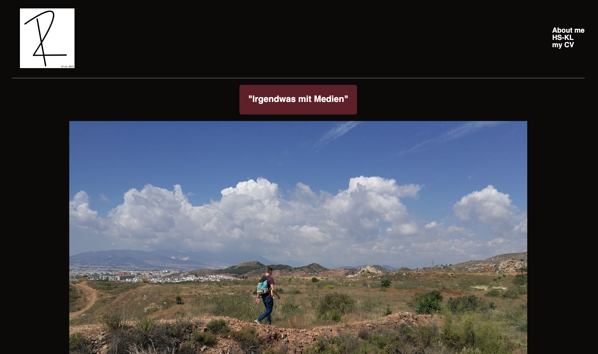

My first website—well, almost.
During my first semester, I built my very first website. Part of the assignment was to familiarize myself with HTML and CSS. To demonstrate how well we've mastered these skills, we had to create a page that describes us—essentially a small portfolio.